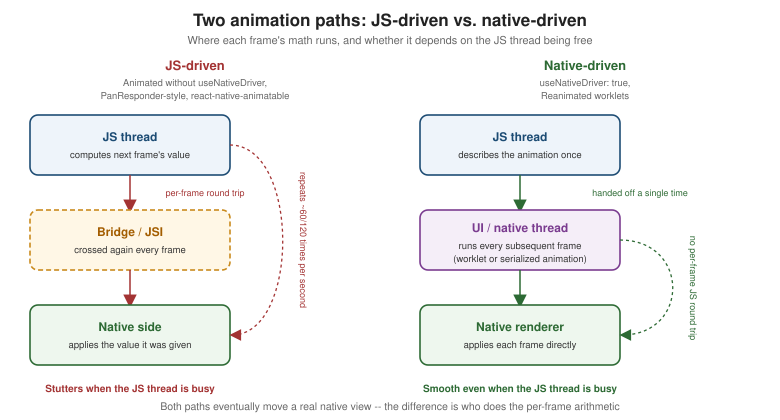

Animations
|
This content was generated with the assistance of AI and should be verified against the official documentation before being relied on in production. |
Touches and Gestures left one thread firmly in the picture:
PanResponder and the raw responder system run their callbacks on the JS thread, and React Native Gesture
Handler was introduced as the way to move gesture recognition off it. This page covers animation the same way — the Animated API in full, then Reanimated as the
modern alternative most real apps reach for once an animation needs to run smoothly no matter what the JS thread
is doing, plus two smaller, purpose-built libraries (react-native-animatable and Lottie) for the cases neither
Animated nor Reanimated is the best tool for.
React Native Architecture Under the Hood already
explains the JS thread / UI thread / native thread split this page’s "why" section builds directly on — consult it first if that split is not already familiar.
Why Animations Must Not Depend on the JS Thread
A smooth animation needs a new frame roughly every 16.7ms (60 frames per second) or every 8.3ms on a 120Hz
ProMotion display. The JS thread, meanwhile, is the same thread running Places's component re-renders, event
handlers, and network response processing — so an animation whose per-frame math (the next opacity, the next
translateY) is computed on the JS thread will visibly stutter the moment that thread is busy with anything
else, exactly the kind of JS-thread contention React
Native Architecture Under the Hood already describes the New Architecture narrowing but not eliminating. This is
the problem useNativeDriver and, later, Reanimated’s UI-thread worklets both exist to solve — by moving the
per-frame arithmetic off the JS thread entirely, onto a thread that keeps running frames on schedule regardless
of what the JS thread is doing.

Animated.Value and useAnimatedValue
An Animated.Value is a mutable, animatable number that lives outside React’s own re-render cycle — reading or
writing it does not trigger a re-render, which is what lets it be updated many times per second without the cost
of a setState call per frame:
import { useRef } from 'react';
import { Animated } from 'react-native';
const opacity = useRef(new Animated.Value(0)).current;The useRef(new Animated.Value(0)).current pattern above exists only to survive re-renders — useRef is React’s
own escape hatch for a mutable value a re-render must not reset. The newer useAnimatedValue Hook wraps that
same pattern directly:
import { useAnimatedValue } from 'react-native';
const opacity = useAnimatedValue(0); // equivalent to useRef(new Animated.Value(0)).currentAnimated.timing, Animated.spring, Animated.decay
Three animator functions drive an Animated.Value from its current value toward a target, each with its own
config shape and its own feel:
-
Animated.timing— moves towardtoValueover a fixedduration(milliseconds), shaped by aneasingfunction; the right choice whenever an animation’s length matters more than how it "feels" physically (a fade-in that should always take exactly 300ms). -
Animated.spring— moves towardtoValuefollowing a physically-modeled spring, configured withfriction(how quickly the spring settles) andtension(how stiff the spring is) instead of a fixed duration; the right choice for anything meant to feel responsive to a gesture rather than mechanically timed (a released draggable pin settling back into place). -
Animated.decay— starts at an initialvelocityand decelerates to a stop under a constant deceleration rate, with notoValueat all; the right choice for a fling/momentum effect where only the release velocity (exactly thegestureState.vx/vyTouches and Gestures already introduced) determines how far the animation travels.
Animated.timing(opacity, {
toValue: 1,
duration: 300,
easing: Easing.ease,
useNativeDriver: true,
}).start();
Animated.spring(scale, {
toValue: 1,
friction: 6,
tension: 40,
useNativeDriver: true,
}).start();
Animated.decay(pan.x, {
velocity: gestureState.vx,
deceleration: 0.997,
useNativeDriver: true,
}).start();Easing
Easing supplies the curve Animated.timing’s `easing option follows — how the animated value’s rate of
change varies over the fixed duration, rather than the duration itself:
-
Easing.linear— constant rate, no acceleration or deceleration at all. -
Easing.ease— the general-purpose default: a gentle acceleration in, deceleration out. -
Easing.bezier(x1, y1, x2, y2)— a custom cubic-bezier curve, the same four-number shape CSS’s owncubic-bezier()timing function uses, for a curve none of the named presets match. -
Easing.bounce— overshoots and settles with a bouncing motion, the same visual effectAnimated.springachieves physically rather than through a curve.
interpolate
interpolate maps one `Animated.Value’s input range onto a different output range, which is how a single
driving value (a scroll position, a gesture’s progress, a plain 0-to-1 timing value) ends up controlling several
visually different properties at once:
const translateY = scrollY.interpolate({
inputRange: [0, 100],
outputRange: [0, -50],
extrapolate: 'clamp',
});
const opacity = scrollY.interpolate({
inputRange: [0, 100],
outputRange: [1, 0],
extrapolate: 'clamp',
});Both translateY and opacity above are derived from the same underlying scrollY value — exactly the shape
the collapsing header example below uses to drive a header’s height and fade from one scroll-position value.
Composing Animations: sequence, parallel, stagger, loop
Animated’s composition helpers combine several animations (each one an `Animated.timing/spring/decay call,
not yet started) into a single coordinated animation:
-
Animated.sequence([a, b, c])— runs each animation to completion before starting the next. -
Animated.parallel([a, b])— starts every animation at the same time. -
Animated.stagger(delay, [a, b, c])— starts every animation at the same time asparallel, but with a fixeddelayoffset between each one’s start — the effect behind a list of cards fading in one after another rather than all at once. -
Animated.loop(animation)— restarts the given animation from the beginning every time it finishes, until explicitly stopped.
Animated.sequence([
Animated.timing(opacity, { toValue: 1, duration: 200, useNativeDriver: true }),
Animated.timing(scale, { toValue: 1, duration: 150, useNativeDriver: true }),
]).start();Animated.event
Animated.event wires a native event’s numeric field directly into an Animated.Value, without a JS-thread
round trip for every single event — the event’s value is written straight into the Animated.Value on the
native side when useNativeDriver: true is set:
const scrollY = useAnimatedValue(0);
<FlatList
data={places}
onScroll={Animated.event(
[{ nativeEvent: { contentOffset: { y: scrollY } } }],
{ useNativeDriver: true },
)}
scrollEventThrottle={16}
/>The nested shape ([{ nativeEvent: { contentOffset: { y: scrollY } } }]) mirrors the native scroll event’s
own shape exactly — Animated.event walks that path on every event and assigns whatever numeric value it finds
at nativeEvent.contentOffset.y into scrollY, entirely without invoking the JS callback that a plain
onScroll={(event) ⇒ setScrollY(event.nativeEvent.contentOffset.y)} would otherwise require once per event.
useNativeDriver: true
Setting useNativeDriver: true serializes the animation’s description (its toValue, duration, easing
curve, and so on) exactly once and hands that description to the native side, which then runs every subsequent
frame entirely off the JS thread — no per-frame message back to JavaScript at all. Historically this only
worked for non-layout properties — opacity and transform — because those two are applied directly to
an already-laid-out native view, while a layout-affecting property (width, height, top) requires
re-running Flexbox and therefore, on the old architecture, had to fall back to the JS thread. React Native
0.85 introduced a shared native animation backend that also lets useNativeDriver animate certain layout
properties natively on the New Architecture, narrowing that historic gap — the collapsing header example below
still shows the interpolate-driven layout change explicitly, since not every layout property is covered yet
and understanding the underlying mechanism matters regardless of which properties a given release covers
natively.
LayoutAnimation
LayoutAnimation takes a different approach entirely: instead of describing what to animate, it tells React
Native to animate whatever the next layout change turns out to be, automatically, without a hand-written
Animated.timing for each affected property:
import { LayoutAnimation, Platform, UIManager } from 'react-native';
if (Platform.OS === 'android' && !UIManager.setLayoutAnimationEnabledExperimentalAndroid) {
// no longer needed on the New Architecture; kept here only for a project still on the legacy path
UIManager.setLayoutAnimationEnabledExperimentalAndroid(true);
}
function expandNotes() {
LayoutAnimation.configureNext(LayoutAnimation.Presets.easeInEaseOut);
setNotesExpanded(true); // whatever this state change does to layout is animated automatically
}This is the right tool for a list item’s size changing (a PlaceCard’s notes preview expanding) without writing
an explicit `Animated.timing for every property the size change touches — at the cost of far less control than
driving the same change through Animated or Reanimated directly. The UIManager.setLayoutAnimationEnabledExperimentalAndroid(true)
opt-in was historically required on Android; it is no longer needed on the New Architecture, where
LayoutAnimation works out of the box on both platforms.
Reanimated, react-native-animatable, and Lottie
Reanimated
Reanimated (also from Software Mansion, the same team
behind React Native Gesture Handler) replaces Animated.Value with a shared value and replaces
Animated.timing/Animated.spring with animators that run entirely on the UI thread:
-
useSharedValue(initial)— the Reanimated equivalent ofuseAnimatedValue: a mutable animatable value that survives re-renders, but one whose reads and writes are visible from the UI thread directly. -
Worklets — ordinary-looking JavaScript/TypeScript functions marked (by Reanimated’s Babel plugin) to be compiled and executed on the UI thread rather than the JS thread.
useAnimatedStyle’s callback below is a worklet; so is a `Gesture.Pan().onUpdate()callback once it is paired with Reanimated instead ofuseState, the exact upgrade Touches and Gestures already flagged for its ownGestureDetectordraggable pin. -
useAnimatedStyle(() ⇒ { … })— returns a style object, recomputed automatically on the UI thread every time a shared value the worklet reads changes, and applied directly to the component without ever touching the JS thread. -
withTiming(toValue, config)/withSpring(toValue, config)— Reanimated’s own timing/spring animators, analogous toAnimated.timing/Animated.springin the config options they accept, but executed entirely on the UI thread rather than serialized once and handed off to it. -
Gesture-driven animations — pairing a
useSharedValuedirectly with aGesture.Pan()’s `.onUpdate()callback lets a drag update the screen with zero JS-thread involvement at any point in the gesture, the production version of the draggable pin Touches and Gestures left as an illustrativeuseStateversion. -
Entering/exiting/layout animations —
entering={FadeIn},exiting={FadeOut}, andlayout={LinearTransition}props on Reanimated’s ownAnimated.Viewanimate a component’s mount, unmount, and layout change automatically, without auseEffector an explicit shared value at all:import Animated, { FadeIn, FadeOut, LinearTransition } from 'react-native-reanimated'; <Animated.View entering={FadeIn} exiting={FadeOut} layout={LinearTransition}> <PlaceCard place={place} onPress={onPress} onToggleFavourite={onToggleFavourite} /> </Animated.View>
react-native-animatable
react-native-animatable is a lighter-weight, pre-built animation-preset library: wrap a component in
Animatable.View and name a preset:
import * as Animatable from 'react-native-animatable';
<Animatable.View animation="fadeIn" duration={300}>
<PlaceCard place={place} onPress={onPress} onToggleFavourite={onToggleFavourite} />
</Animatable.View>It is the right choice for a quick, simple entrance/exit effect with no Animated/Reanimated code to write at
all, at the cost of far less control than either — there is no equivalent of a shared value, a worklet, or an
interpolate mapping, only a named preset and a duration.
Lottie
Lottie (lottie-react-native) plays a designer-authored After Effects animation exported as JSON
(.lottie/.json) through a LottieView component. It is not something engineering hand-animates at all — it is for the polished loading/success/empty-state animation a designer hands off directly as a file, rendered
pixel-for-pixel as designed rather than approximated with Animated/Reanimated primitives.
Comparing the Four
| Approach | What it is | Choose it when |
|---|---|---|
|
React Native’s own animation API: |
No extra dependency is wanted, and the animation is a fade, scale, translate, or scroll-driven effect that fits `Animated’s value-and-interpolate model. |
Reanimated |
A shared-value-and-worklet model running entirely on the UI thread, paired naturally with Gesture Handler. |
The animation is gesture-driven, needs to stay smooth under heavy JS-thread load, or benefits from
|
react-native-animatable |
A pre-built library of named animation presets applied to a wrapping component. |
A quick, simple entrance/exit effect is needed with no explicit |
Lottie |
A player for designer-authored After Effects JSON animations. |
A designer hands off a polished loading/success/empty-state animation as a file, rather than engineering hand-animating an equivalent effect. |
Places: Fading Cards, a Collapsing Header, and a Loading Animation
(a) A Fade-In PlaceCard with Animated
PlaceCard (established on styling.adoc and given press feedback on
Touches and Gestures) fades in on mount by wrapping its
existing content in an Animated.View driven by an Animated.Value:
// src/features/places/components/PlaceCard.tsx (excerpt -- wraps the existing card content in a fade-in)
import { useEffect, useRef } from 'react';
import { Animated } from 'react-native';
export function PlaceCard({ place, onPress, onToggleFavourite }: PlaceCardProps) {
const theme = useTheme();
const styles = useMemo(() => createStyles(theme), [theme]);
const opacity = useRef(new Animated.Value(0)).current;
useEffect(() => {
Animated.timing(opacity, {
toValue: 1,
duration: 300,
useNativeDriver: true,
}).start();
}, [opacity]);
return (
<Animated.View style={{ opacity }}>
<Pressable
style={({ pressed }) => [styles.card, pressed && styles.cardPressed]}
onPress={() => onPress(place.id)}
>
{/* photo, name, category, favourite toggle unchanged from styling.adoc/touches-and-gestures.adoc */}
</Pressable>
</Animated.View>
);
}useNativeDriver: true is safe here because opacity is exactly the non-layout property that has always run
natively — the fade plays smoothly regardless of what the JS thread is doing while PlacesListScreen mounts a
whole screen of cards at once.
(b) A Scroll-Driven Collapsing Header on PlacesListScreen
PlacesListScreen (its FlatList covered in full on Lists and
Scrolling) collapses its header as the list scrolls, driven by the same Animated.event/interpolate pairing
introduced above:
// src/features/places/screens/PlacesListScreen.tsx (excerpt -- collapsing header)
import { useAnimatedValue } from 'react-native';
import { Animated, FlatList } from 'react-native';
const HEADER_MAX_HEIGHT = 140;
const HEADER_MIN_HEIGHT = 56;
export function PlacesListScreen() {
const scrollY = useAnimatedValue(0);
const headerHeight = scrollY.interpolate({
inputRange: [0, HEADER_MAX_HEIGHT - HEADER_MIN_HEIGHT],
outputRange: [HEADER_MAX_HEIGHT, HEADER_MIN_HEIGHT],
extrapolate: 'clamp',
});
const headerTitleOpacity = scrollY.interpolate({
inputRange: [0, HEADER_MAX_HEIGHT - HEADER_MIN_HEIGHT],
outputRange: [1, 0],
extrapolate: 'clamp',
});
return (
<View style={styles.container}>
<Animated.View style={[styles.header, { height: headerHeight }]}>
<Animated.Text style={[styles.headerTitle, { opacity: headerTitleOpacity }]}>
Places
</Animated.Text>
</Animated.View>
<FlatList
data={places}
renderItem={renderPlaceCard}
onScroll={Animated.event(
[{ nativeEvent: { contentOffset: { y: scrollY } } }],
{ useNativeDriver: false },
)}
scrollEventThrottle={16}
/>
</View>
);
}headerHeight interpolates a layout property (height), so this call sets useNativeDriver: false — unless
running on React Native 0.85+'s shared native animation backend on the New Architecture, in which case this
particular layout property can run natively too; headerTitleOpacity alone could always be driven natively,
since opacity never depended on the layout-property restriction to begin with.
(c) The Same Fade-In PlaceCard, Rewritten with Reanimated
The same effect as (a), for direct before/after comparison, using a shared value and a worklet instead of an
Animated.Value and an imperative .start() call:
// src/features/places/components/PlaceCard.tsx (excerpt -- Reanimated version of the fade-in above)
import { useEffect } from 'react';
import Animated, { useAnimatedStyle, useSharedValue, withTiming } from 'react-native-reanimated';
export function PlaceCard({ place, onPress, onToggleFavourite }: PlaceCardProps) {
const theme = useTheme();
const styles = useMemo(() => createStyles(theme), [theme]);
const opacity = useSharedValue(0);
useEffect(() => {
opacity.value = withTiming(1, { duration: 300 });
}, [opacity]);
const animatedStyle = useAnimatedStyle(() => ({
opacity: opacity.value,
}));
return (
<Animated.View style={animatedStyle}>
<Pressable
style={({ pressed }) => [styles.card, pressed && styles.cardPressed]}
onPress={() => onPress(place.id)}
>
{/* photo, name, category, favourite toggle unchanged from styling.adoc/touches-and-gestures.adoc */}
</Pressable>
</Animated.View>
);
}useAnimatedStyle’s callback is a worklet: it runs on the UI thread every time `opacity.value changes, which
withTiming itself updates frame-by-frame also on the UI thread — unlike (a), there is no useNativeDriver
flag to set at all, because every part of this version already runs off the JS thread by construction.
Animated.View here is Reanimated’s own export, not React Native’s — the two are not interchangeable, since
only Reanimated’s Animated.View knows how to apply a useAnimatedStyle result on the UI thread.
(d) A Lottie Loading Animation on PlacesListScreen
While usePlaces() (TanStack Query, covered in full on
Networking and Data Fetching) is loading, PlacesListScreen
renders a Lottie animation in place of the list:
// src/features/places/screens/PlacesListScreen.tsx (excerpt -- loading state)
import LottieView from 'lottie-react-native';
import { usePlaces } from '../hooks/usePlaces';
export function PlacesListScreen() {
const { data: places, isLoading } = usePlaces();
if (isLoading) {
return (
<LottieView
source={require('../../../assets/animations/loading-places.json')}
autoPlay
loop
style={styles.loadingAnimation}
/>
);
}
return (
// FlatList of places, as in (b) above
<FlatList data={places} renderItem={renderPlaceCard} /* ... */ />
);
}loading-places.json is a designer-exported Lottie file bundled directly into the app under assets/animations/ — nothing about autoPlay/loop involves Animated, Reanimated, or a shared value; LottieView drives its
own playback internally once given the file.